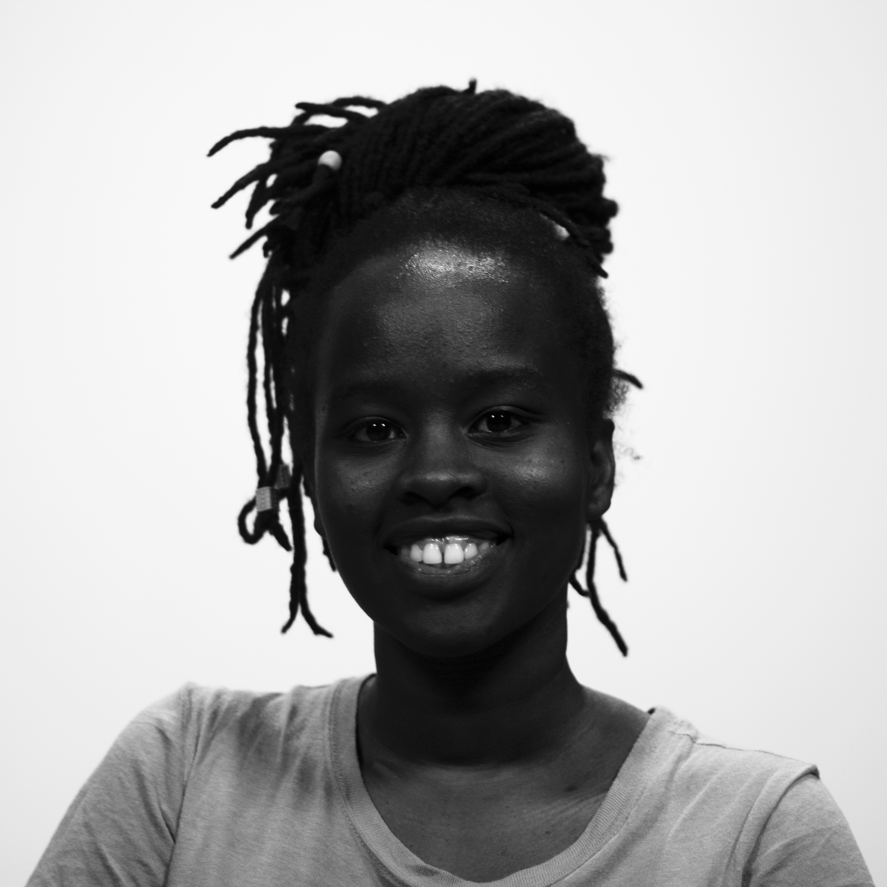
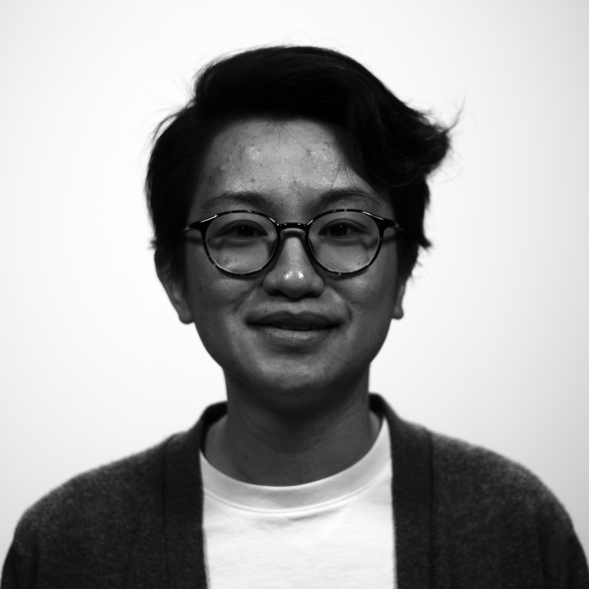
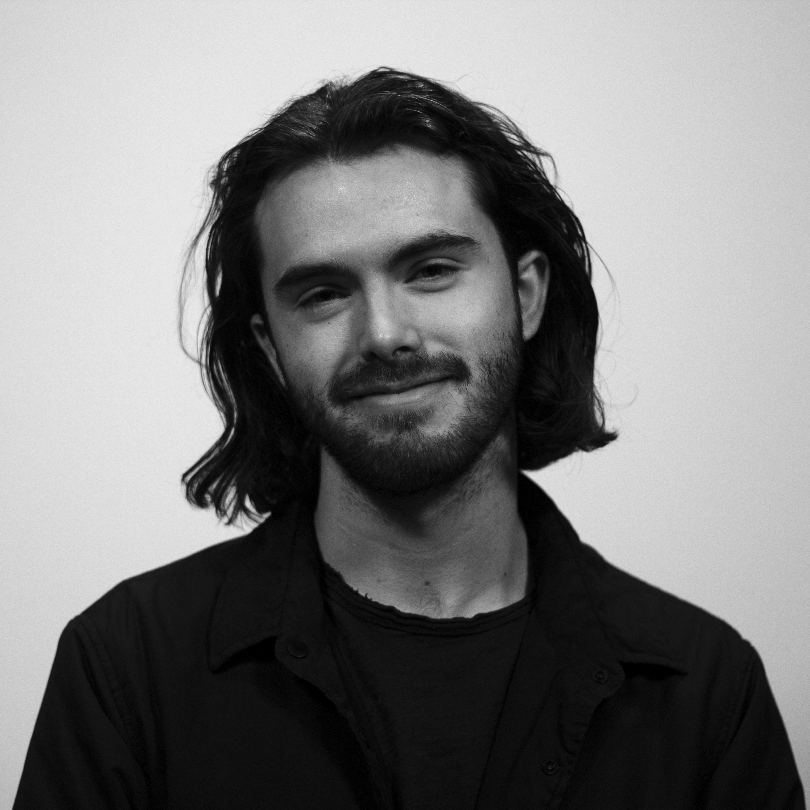

THE TEAM


Naziru Mikailu
Editorial and social media

Benjamin Piorgah Tetteh
Editorial

Sahina Shrestha
Editorial and social media

Aldana Vales
Web and Graphic Design

Natasha Jokic
Editorial Project Manager

Jackline Kemigisa
Editorial

Kai Ling Ng
Editorial

Ian Patterson
Web Design and Editorial

Nicolás Ríos
Web Design and Photography
Priyanka Vora
Editorial Project Manager
Amber C. Walker
Editorial and social media